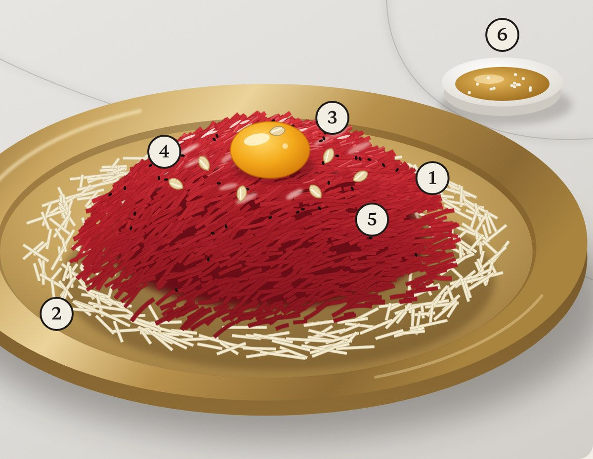

메뉴판 디자인 · SD-MN74
이 디자인으로 상담하기
선홍 육회
그날 들어온 한우 우둔을 오후에 한 번 손질해 육회와 육사시미, 낙지탕탕이를 내는 저녁 식당의 A4 메뉴판입니다. 위쪽은 차가운 대리석 위 놋 접시에 배채를 깔고 꽃처럼 올린 육회를 크게 그렸고, 그림 속 번호와 아래 재료 띠로 접시에 무엇이 올라가는지 설명합니다. 아래에는 대표 메뉴 선홍 육회 소 29,000원을 먹색 상자에 따로 두고, 바다·식사·곁들임·주류와 원산지 표시까지 한 장에 담았습니다.
A4 세로 · 1장 · 한국어 · 원화배 과육 미색 · 먹색 · 선홍놋 접시 육회 3/4 시점 그림
![선홍 육회 메뉴판 전체. 미색 종이 위쪽 왼쪽에 한우 우둔 육회 · 육사시미 · 낙지탕탕이라는 작은 글과 큰 명조 제목 선홍 육회, 오른쪽에 17:00 – 24:00, 마지막 주문 23:00 · 일요일 쉼, 우둔이 다 나가면 육회는 그날 마감이 있습니다. 그 아래 회색 대리석 판 왼쪽에 제목 그날 들어온 우둔을 오후 네 시에 결 반대로 썹니다와 설명, 손질은 하루 한 번이라는 문장이 있고, 오른쪽에는 금빛 놋 접시에 옅은 크림빛 배채를 둥글게 깔고 가늘게 채 썬 붉은 육회를 봉긋하게 쌓아 꼭대기에 달걀노른자와 잣, 흑임자를 올린 그림, 오른쪽 위에 기름장 종지가 있고, 제목 아래 대리석 위에는 검은 손잡이의 칼 한 자루가 가로로 놓여 있습니다. 그림 위 번호 1부터 6은 아래 재료 띠의 한우 우둔, 배, 노른자, 잣, 흑임자, 기름장 설명과 이어집니다. 아래 왼쪽 육회 칸에는 먹색 상자 안 선홍 육회 소 200g 29,000원(선홍색), 대 350g 46,000원, 이어서 육사시미 소 32,000원 · 대 49,000원, 반반 모둠 48,000원, 바다 칸에 낙지탕탕이 26,000원, 육회 탕탕이 49,000원이 있습니다. 오른쪽 식사 칸에 육회비빔밥 13,000원, 육회물회 5월 – 9월 15,000원, 소고기뭇국 4,000원, 곁들임 칸에 한우 육전 18,000원, 뚝배기 계란찜 5,000원, 포장 안내 상자가 있습니다. 그 아래 한 줄로 주류 · 음료 소주 5,000원, 맥주 6,000원, 막걸리 6,000원, 하이볼 8,000원, 탄산음료 2,000원, 매실차 3,000원, 맨 아래에 원산지 표시와 주소 자리표시, 전화 000-0000-0000이 있습니다.](page1.png)

번호로 읽는 접시재료 이름은 그림 위 번호와 아래 재료 띠로 나눠 적어, 그림을 가리지 않고도 무엇이 올라가는지 알 수 있습니다.
바꿀 수 있는 것
- 메뉴 이름, 중량, 가격, 영업시간과 원산지 표시
- 접시 그림을 우리 가게 대표 메뉴로: 육사시미, 생고기, 뭉티기, 낙지탕탕이
- A4 테이블 메뉴판, 벽에 거는 큰 메뉴판, 포장 안내 카드